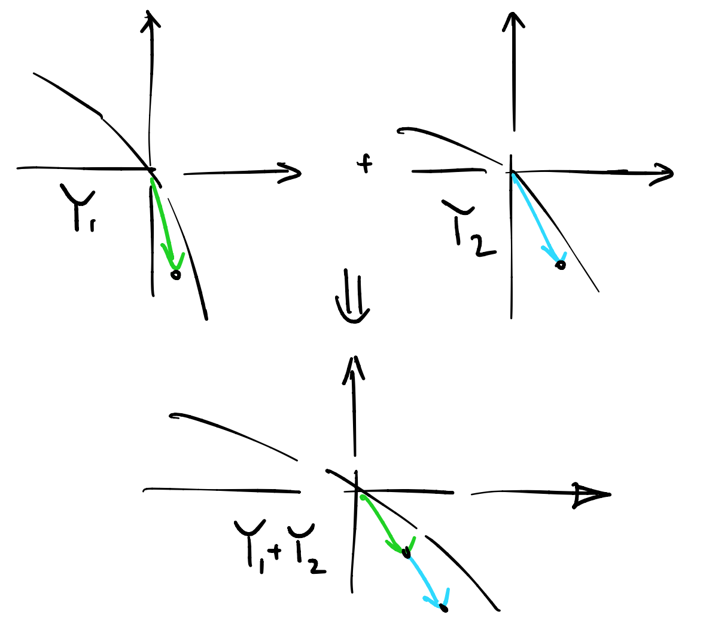

Двенадцатая лекция, часть 1
Contents
Двенадцатая лекция, часть 1¶
В этой части лекции мы поговорим об экономиках с производством.
Что такое экономика с производством?¶
Экономика обмена – это
несколько потребителей (индивидуумов) \(I = \{ a,b,c, \ldots\}\),
несколько производителей \(J = \{ \alpha, \beta, \gamma, \ldots\}\),
несколько товаров \(K = \{1, 2, 3, \ldots\}\),
начальные запасы \(\vec w_{a}, \vec w_{b}, \vec w_{c}, \ldots\)
вектора потребления \(\vec x_{a}, \vec x_{b}, \vec x_{c}, \ldots\)
вектора производства \(\vec y_{\alpha}, \vec y_{\beta}, \vec y_{\gamma}, \ldots\)
Экономика может находиться в одном из многих допустимых состояний
Definition 61
Допустимым состоянием экономики с производством называется набор координат потреблений и производств
такой, что
потребления неотрицательные
сумма потреблений (по каждому товару) совпадает с общими запасами (этого товара) и общим производством (этого товара)
производства принадлежат соответствующим технологическим множествам
Совместное технологическое множество¶
Последнее условие про \( \vec y_j \in Y_j\) можно заменить на то, что суммарное производство принадлежит совместному технологическому множеству \(Y\):
Definition 62
Совместным технологическим множеством \(Y\) экономики с производством называется сумма всех индивидуальных технологических множеств.
Подсчет \(Y\) дословно соответствует тому, что мы делали раньше, когда надо было “объединить два завода”. Как правило, \(Y\) выглядит примерно так же, как и \(Y_i\): он вогнутый, проходит через ноль, не содержит первый ортант.
{kind=link}
Ящик Эджворта¶
Как представить себе ящик Эджворта в экономике с производством?
сначала надо нарисовать суммарные запасы \(\{w_k\}_{k \in K}\), другими словами, правый верхний угол ящика Эджворта;
затем надо построить совместное технологическое множество \(Y\), проходящее через \(\{w_k\}_{k \in K}\), как если бы это было начало координат;
затем на границе этого множества выбрать новую точку;
от нее нарисовать новый ящик Эджворта;
потом взять другую точку, и так далее…
Пространство допустимых состояний описывается множеством прямоугольников в \(\mathbb{R}^2\), по одному на каждый \(y \in Y\).

Получается, что ящик Эджворта “едет вдоль” границы \(Y\). Как только мы зафиксировали производство \(y \in Y\), ящик останавливается и дальше анализ соответствует простой экономике обмена.
Парето-Оптимальность¶
Парето-оптимальность определяется аналогично тому, как мы это делали в экономике обмена, только поменялась интерпретация допустимого состояния.
Definition 63
Допустимое (в эк-ке с пр-вом) состояние сильно ПО, если не существует другого допустимого состояния, которое делает всем агентам (слабо) лучше, но хотя бы одному агенту сильно.
Допустимое (в эк-ке с пр-вом) состояние слабо ПО, если не существует другого допустимого состояния, которое делает всем агентам (сильно) лучше.
Геометрическая интерпретация ПО¶
Я могу дать лишь наглядную интерпретацию ПО, когда он является внутренней точкой.
нарисуем точку общих запасов,
нарисуем общую технологическую границу,
возьмем новую точку на границе и запомним наклон,
нарисуем ящик Эджворта и как бы Парето-фронт в нем,
на этом Парето-фронте выберем точку, в которой кривые безразличия касаются с тем же наклоном, что мы запомнили.
{kind=link}
Другими словами, истинный Парето-фронт состоит из набора точек, по одной на каждом из Парето-фронтах, нарисованных в двигающемся ящике Эджворта. Поскольку наклон Парето-фронта совпадает с наклоном границы технологического множества в соответствующей точке, то их форма приблизительно похожа друг на друга.
Утилитарная интерпретация ПО¶
Рассмотрим функцию, задающую границу совместного технологического множества:
В таком случае, можно интерпретировать ее как полезность дополнительного агента…
Максимизируем взвешенную полезность, получаем истинный Парето-фронт. Заметим, что отсюда моментально следует коллинеарность всех трех градиентов: \(\nabla U_a, \nabla U_b, \nabla F\) вo внутреннем Парето-оптимуме.
Равновесие Вальраса с производством¶
Definition 64
Равновесием Вальраса экономики с производством называется допустимое состояние \(\vec x, \vec y\) и вектор цен \(\vec p\), такие, что каждый агент достигает максимума полезности по бюджетному ограничению, с бюджетом равным доходу от продажи своих начальных запасов, а производители максимизируют прибыль.
Как устроена площадка¶
Денег изначально у агентов нет, а есть только запасы товаров.
Агенты приходят на абстрактную торговую площадку и начинают менять запасы на деньги по всем известному курсу \(\vec p\). Деньги печатаются, по мере необходимости, а товары остаются на центральном складе.
Далее приходят фирмы и начинают производить новые товары из тех, что лежат на складе. Покупая и продавая товары на площадке, они получают прибыль в деньгах, а число товаров на складе меняется. Прибыль перечисляется агентам, которые владеют фирмами.
Далее, агент начинает тратить свои деньги на товары. Причем, агент не видит товары и откуда они появляются, он просто “запрашивает” определенное количество. В некотором смысле он покупает “обещание” получить товар после окончания торгов.
Когда торги закончатся, организатор обязуется выполнить обещания в точности, причем, не должно остаться лишних товаров на складе (товарное равенство).
Задача организатора - выбрать цены \(\vec p\) так, чтобы все получилось.
РВ как система уравнений¶
Поиск Равновесия Вальраса можно представить себе как несколько групп уравнений.
товарные равенства, \(K\) штук: что сумма товаров в каждой категории равны соответствующим общим запасам, т.е. допустимое состояние экономики,
условия оптимальности агентов, \(K \cdot I\) штук: что каждый агент выбирает потребление оптимально, т.е. условия первого порядка,
условия оптимальности фирм, \(K \cdot J\) штук: также условия первого, порядка
законы вальраса, \(I\) штук,
неизвестные тоже можно разбить на группы
цены, их \(K\) штук,
собственно потребления, их \(K \cdot I\) штук,
производства, их \(K \cdot J\) штук,
множители Лагранжа, их \(I\) штук.
Как и в прошлый раз, у нас система из \((I +J)\cdot K + K + I\) уравнений и столько же неизвестных, но система снова линейно зависима.
Как и в экономике обмена, если выполнены законы Вальраса для всех кроме одного агента, то последний закон Вальраса выполняется автоматически.
То есть линейно независимых уравнений, на самом деле \((I+J)\cdot K + K + I - 1\). И столько же переменных, поскольку одну из цен можно нормировать к единице.
Теоремы благосостояния¶
Theorem 12 (Первая теорема благосостояния)
Пусть \((\vec x, \vec y, \vec p)\) - общее равновесие в экономике с производством, где все полезности локально ненасыщаемы, тогда \((\vec x, \vec y)\) - Парето-оптимум в сильном смысле.
Доказательство
От обратного, предположим, что есть слабое Парето-улучшение, несмотря на то, что а) агенты максимизируют полезности б) фирмы максимизируют прибыль.
Назовем \((\tilde x, \tilde y)\) - кандидат на Парето-улучшение.
Точка зрения агентов
Из локальной ненасыщаемости следует, что \(\tilde x\) должна лежать вне бюджетного ограничения для того агента, который строго предпочитает \(\tilde x\) к \(\vec x\), в противном случае он бы никогда не купил \(\vec x\) в равновесии,
А для всех остальных агентов либо вне либо в точности на бюджетной гиперплоскости,
Тогда
Точка зрения фирм
Поскольку все фирмы максимизируют прибыль,
а значит
Допустимое состояние
а значит
Построим цепочку
Противоречие.
Theorem 13 (Вторая теорема благосостояния)
Пусть \((\vec x, \vec y)\) - внутренний сильный Парето-оптимум в экономике с производством, где все выпукло, непрерывно и локально ненасыщаемо, тогда существуют вектор цен и трансферты, такие, что \((\vec x, \vec y, \vec p)\) - равновесие вальраса с трансфертами.
Идея доказательства
см. Теорема 4.7 в учебнике БЖЦ, опирается на теорему о разделяющей гиперплоскости.
Экономика Эрроу-Дебре¶
Definition 65
Равновесием экономики Эрроу-Дебре называется допустимое состояние \(\vec x, \vec y\) и вектор цен \(\vec p\), такие, что каждый агент достигает максимума полезности по бюджетному ограничению, с бюджетом равным доходу от продажи своих начальных запасов, а также какой-то доли прибыли фирм:
а производители максимизируют прибыль:
Ну и, конечно, доли должны суммироваться в единицу: